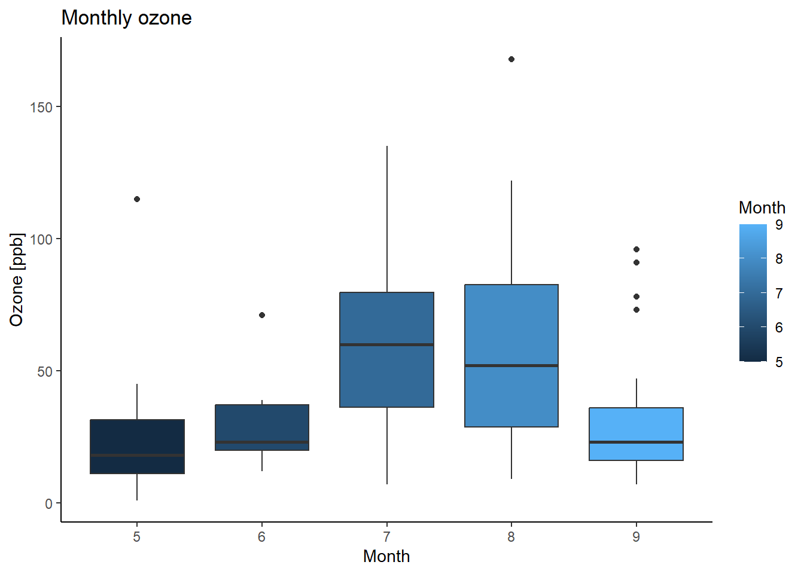

Given the following organic matter contents (unit: %) in different soil types, do organic matters differ among soil types?
| Soil type | Soil organic matter content (%) |
|---|---|
| A | 2.0, 2.8, 3.3, 3.2, 4.4, 3.6, 1.9, 3.3, 2.8, 1.1 |
| B | 3.5, 2.8, 3.2, 3.5, 2.3, 2.4, 2.0, 1.6 |
| C | 3.3, 3.6, 2.6, 3.1, 3.2, 3.3, 2.9, 3.4, 3.2, 3.2 |
| D | 3.2, 3.3, 3.2, 2.9, 3.3, 2.5, 2.6, 2.8 |
| E | 2.6, 2.6, 2.9, 2.0, 2.0, 2.1 |
| F | 3.1, 2.9, 3.1, 2.5 |
| G | 2.6, 2.2, 2.2, 2.5, 1.2, 1.2 |
| H | 2.5, 2.4, 3.0, 1.5 |
A non-parametric test, also known as a distribution-free test, assumes nothing about the underlying distribution (for example, that the data comes from a normal distribution). That’s compared to parametric test, which makes assumptions about a population’s parameters (for example, the mean or standard deviation); When the word “non-parametric” is used in stats, it doesn’t quite mean that you know nothing about the population. It usually means that you know the population data does not have a normal distribution.
Situations to use non-parametric tests:
The underlying distribution is not normal, thus the normality assumption is not valid
Data type is nominal (e.g., pass or fail) or ordinal (aka, ranks or start-rating)
One or more assumptions of a parametric test have been violated
The sample size is too small to run a parametric test
Outliers can not be removed
Prefer to test for the median rather than the mean (e.g., very skewed distribution)
Non-parametric tests have lower power compared to parametric tests - they often do not reject H0 when they should.
The Mann–Whitney U test is also called the Mann–Whitney–Wilcoxon (MWW), Wilcoxon rank-sum test, or Wilcoxon–Mann–Whitney test. It is used to compare the differences between two independent samples when the sample distributions are not normally distributed and the sample sizes are small (n < 30). It is considered to be the non-parametric equivalent to the two-sample independent t-test.
The requirements of using Mann–Whitney U test are:
Random and independent samples
For maximum accuracy, there should be no ties. But there is a way to handle ties in the test.
In the Mann–Whitney U test, we have:
H0: There is no difference in the two population means
H1: There is a difference in the two population means
The Mann–Whitney U test is done with the wilcox.test() function in R:
# Make up samples
Treat <- c(3, 5, 1, 4, 3, 5)
Control <- c(4, 8, 6, 2, 1, 9)
# Perform the Mann Whitney U test
wilcox.test(Treat, Control, paired=F, alternative="two.sided")## Warning in wilcox.test.default(Treat, Control, paired = F, alternative = "two.sided"): cannot
## compute exact p-value with ties##
## Wilcoxon rank sum test with continuity correction
##
## data: Treat and Control
## W = 13, p-value = 0.468
## alternative hypothesis: true location shift is not equal to 0The Wilcoxon signed rank test is a non-parametric alternative to paired t-test used to compare paired data. It’s used whendata are not normally distributed.
The requirements of using the Wilcoxon signed rank test are:
Random and independent samples
Approximately symmetrical distributions
In the Wilcoxon signed rank test, we have:
H0: There is no difference in the two population means
H1: There is a difference in the two population means
The Wilcoxon signed rank test is also done with the wilcox.test() function in R, but with different keywords:
# Make up samples
Treat <- c(3, 5, 1, 4, 3, 5)
Control <- c(4, 8, 6, 2, 1, 9)
# Perform the Wilcoxon signed rank test
wilcox.test(Treat, Control, paired=T, alternative="two.sided")## Warning in wilcox.test.default(Treat, Control, paired = T, alternative = "two.sided"): cannot
## compute exact p-value with ties##
## Wilcoxon signed rank test with continuity correction
##
## data: Treat and Control
## V = 5, p-value = 0.2932
## alternative hypothesis: true location shift is not equal to 0When the distribution of differences between paired data values is neither normal nor symmetrical, use the sign test. The sign test is done with the SIGN.test() function from the BSDA package R:
##
## Dependent-samples Sign-Test
##
## data: Treat and Control
## S = 2, p-value = 0.6875
## alternative hypothesis: true median difference is not equal to 0
## 95 percent confidence interval:
## -4.9 2.0
## sample estimates:
## median of x-y
## -2
##
## Achieved and Interpolated Confidence Intervals:
##
## Conf.Level L.E.pt U.E.pt
## Lower Achieved CI 0.7812 -4.0 2
## Interpolated CI 0.9500 -4.9 2
## Upper Achieved CI 0.9688 -5.0 2The Kruskal–Wallis test, also known as Kruskal–Wallis H test or one-way ANOVA on ranks, is an alternative for the one-way analysis of variance (ANOVA). The test is for checking whether samples originate from the same distribution. It is used for comparing two or more independent samples. It extends the Mann–Whitney U test, which is used for comparing only two groups.
The test assumes that the observations are independent. That is, it is not appropriate for paired observations or repeated measures data.
In the Kruskal–Wallis test, we have:
H0: There is no difference among population means
H1: There is a difference among population means
The Kruskal–Wallis test is done with the kruskal.test() function in R:
# Load data
require(graphics)
# Boxplots
ggplot(airquality, aes(x=Month, y=Ozone, group=Month, fill=Month)) +
geom_boxplot() +
labs(title="Monthly ozone",
x="Month", y="Ozone [ppb]") +
theme_classic()## Warning: Removed 37 rows containing non-finite values (stat_boxplot).
##
## Kruskal-Wallis rank sum test
##
## data: Ozone by Month
## Kruskal-Wallis chi-squared = 29.267, df = 4, p-value = 6.901e-06The outcome of the Kruskal–Wallis test tells you if there are differences among the group means, but doesn’t tell you which groups are different from other groups. To determine which groups are different from others, post-hoc testing can be conducted. The most common post-hoc test for the Kruskal–Wallis test is the Dunn test, here conducted with the dunnTest() function in the FSA package.
## Warning: Month was coerced to a factor.## Warning: Some rows deleted from 'x' and 'g' because missing data.## Dunn (1964) Kruskal-Wallis multiple comparison## p-values adjusted with the Benjamini-Hochberg method.## Comparison Z P.unadj P.adj
## 1 5 - 6 -0.925158616 3.548834e-01 4.436043e-01
## 2 5 - 7 -4.419470641 9.894296e-06 9.894296e-05
## 3 6 - 7 -2.244208032 2.481902e-02 4.963804e-02
## 4 5 - 8 -4.132813422 3.583496e-05 1.791748e-04
## 5 6 - 8 -2.038635487 4.148642e-02 6.914403e-02
## 6 7 - 8 0.286657218 7.743748e-01 8.604164e-01
## 7 5 - 9 -1.321202283 1.864339e-01 2.663342e-01
## 8 6 - 9 0.002538555 9.979745e-01 9.979745e-01
## 9 7 - 9 3.217199124 1.294487e-03 4.314957e-03
## 10 8 - 9 2.922827778 3.468683e-03 8.671708e-03The Spearman correlation test is a rank-based test that does not require assumptions about the distribution of the data. The correlation coefficient from the test, \(\rho\), ranges from -1 to –1, with +1 being a perfect positive correlation and –1 being a perfect negative correlation. A \(\rho\) of 0 represents no correlation.
In the Spearman correlation test, we have:
H0: The populations do not correlate with each other
H1: The populations correlate with each other
The Spearman correlation is done with the cor.test() function in R:
# Make up some random values
x <- rnorm(20,0,1)
y <- 2*x+rnorm(20,0,0.5)
# Perform the Spearman correlation test
cor.test(x, y, method="spearman", alternative="two.sided", conf.level=0.95)##
## Spearman's rank correlation rho
##
## data: x and y
## S = 46, p-value = 6.539e-06
## alternative hypothesis: true rho is not equal to 0
## sample estimates:
## rho
## 0.9654135The Kendall correlation test is also a rank-based test. The correlation coefficient from the test is \(\tau\), ranging from -1 to +1.
Used the Kendall correlation when the sample size is small or there are many tied ranks.
In the Kendall correlation test, we have:
H0: The populations do not correlate with each other
H1: The populations correlate with each other
The Kendall correlation is also done with the cor.test() function in R:
# Perform the Kendall correlation test
cor.test(x, y, method="kendall", alternative="two.sided", conf.level=0.95)##
## Kendall's rank correlation tau
##
## data: x and y
## T = 176, p-value = 4.965e-10
## alternative hypothesis: true tau is not equal to 0
## sample estimates:
## tau
## 0.8526316| Purpose | Parametric | Alternative non-parametric |
|---|---|---|
| Checking independence | Runs test | |
| Checking normality | Shapiro-Wilk test, Lillifors test | |
| Checking Outliers | Grubbs’ test, Dixon’s test, Rosner’s test | Walsh’s test |
| Comparing means of two independent populations | t test | Mann-Whitney U test |
| Comparing means of two paired populations | paired t test | Wilcoxon signed rank, Signed test |
| Comparing means of more than 2 independent populations | One-way ANOVA | Kruskal–Wallis test |
| Checking correlation | Pearson test | Spearman test, Kendall test |
Using data from the section example, do organic matters differ among soil types? Report your results.